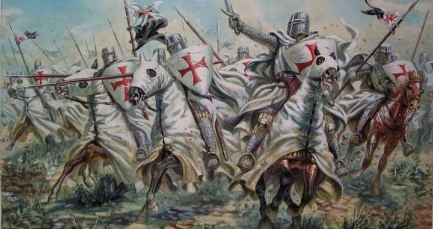

As Cruzadas foram expedições religiosas, militares, políticas e econômicas que ocorreram entre os séculos XI e XIII na Europa, com o objetivo de conquistar a Terra Santa (Jerusalém) e tirá-la da posse dos mulçulmanos. Com o passar do tempo as cruzadas passaram a ter um aspecto mais comercial, pois estas expedições passaram a trazer mercadorias do Ocidente, além delas fazerem com que o Mar Mediterrâneo voltasse a ser utilizado como meio transporte para pessoas e mercadorias.
O que foi as Cruzadas?
Objetivo das Cruzadas
- O principal objetivo das Cruzadas era conquistar a Terra Santa que estva em posse dos turcos.
- Expandir a fé cristã.
- Os nobres que estavam nas Cruzadas tinham como objetivo conquistar novos territórios, assim aumentando seu poder.
- Os reis que estavam presentes tinham como objetivo aumentar suas reputações.
- Aumentar o poder da Igreja.
- Conquistar outras terras para diminuir a densidade populacional da Europa.
- Tinha como objetivo interesses comercias e de conquista de objetos de valor.
Consequências das Cruzadas
Os objetivos religiosos das Cruzadas não foram atingidos, porém os objetivos comercias foram atingidos, e eles geraram grandes transformações na Europa, como a volta da utilização do do Mar Mediterrâneo para transporte de mercadorias e pessoas que fez com que as atividades comerciais voltassem a acontencer na Europa, que naquele período estava vivendo a realidade do feudalismo.
- O termo "cruzada" faz referência a cruz que os cavaleiros usavam em suas roupas
- A Igreja prometia aos fiéis que participassem das Cruzadas a salvação e o perdão de todos os pecados
- Somente após a Primeira Cruzada que surgiu a Ordem dos Cavaleiros Templários